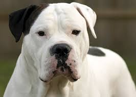
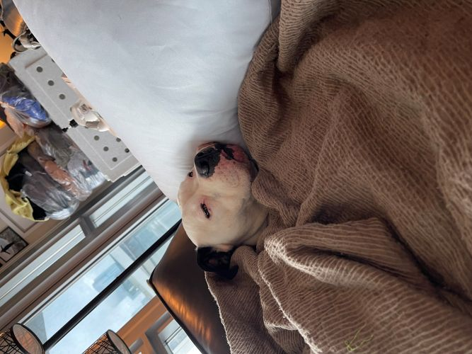

Ali's Homepage

Here's a pic of Hercules
An achievement for me was the pursuit of education in my 50s. While sitting in class with people almost a third my age
can be intimidating, I enjoy the learning. A great asset to my education is Hercules! He helps me focus and study
(not really). He's a great boy with a fun personality — he loves hugs and expensive steak. Considering it's his first
time in school, he's doing great at Illinois Tech! Most of the development is actually done with him. When I get
something right, he chases his tail. When I need help, he jumps on me (he still thinks he's a puppy).
Ali's Study Buddy

Study Buddy
Hercules provides a calm space around him for me to study. His warmth and constant affection are a welcome addition to the challenge of education. As a study buddy, he has a rare ability to sense my moods. Occasionally, he will tug my pants or sleeve with his teeth when he senses I'm struggling.
Hercules's Dad

Herc's Dad
Hercules's dad has his highly judgmental face. His mom was supposed to be quite a looker too, but she started doing
Instagram modeling and no one has seen hide nor hair of her since. Rumor has it she's running a puppy mill!
Hercules the Bed Warmer

Hercules
Hercules has more blankets than me. He also insists that my sheets, on an as-needed basis, have to be unfolded, slept in,
and left rumpled on the floor. In the above picture submitted as evidence, please note that after 18 months of continuous
training and lots of napping, my boy has mastered the art of couch-bed stealing — and using a pillow!